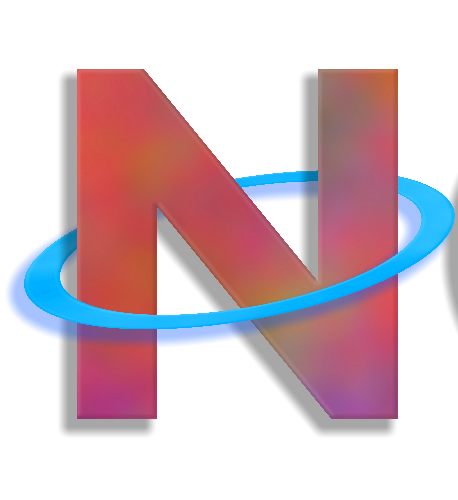
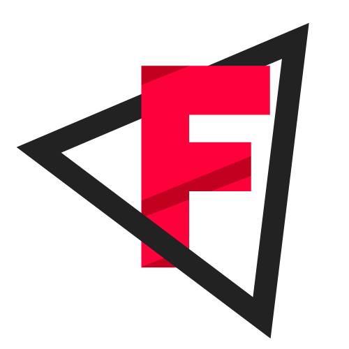
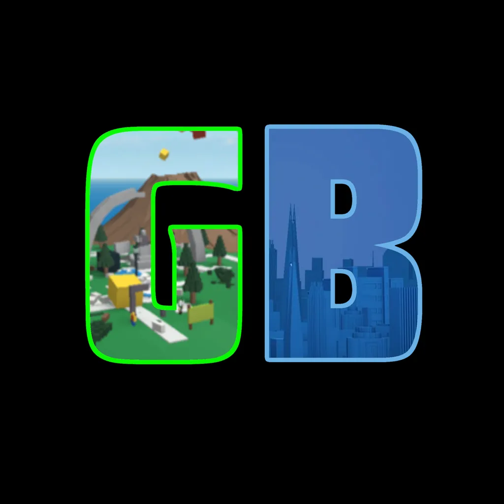
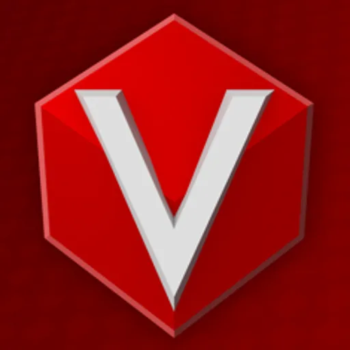
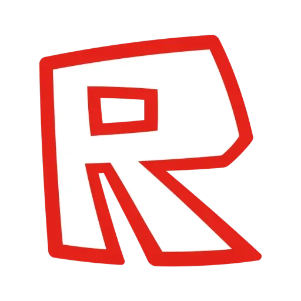
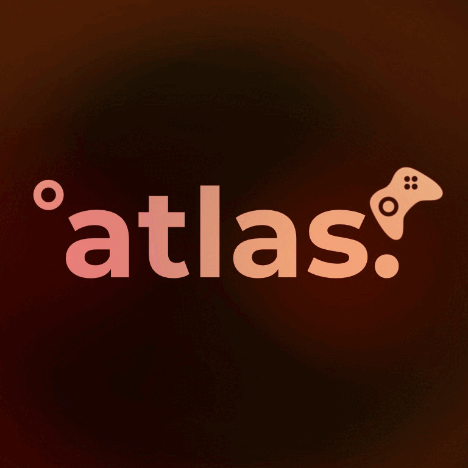

Serene is a 2014-2021 revival that is in development. This revival was known as "RoConomy" until it's rebrand. It is rumored to be available for Windows, Linux (with Wine) and Android in the future.


Novetus is a 2007-2012 revival that has been a long-standing part of the revival community and has been there for quite a while - over time it has been updated with new features that solidify its place in this community.


Finobe is an revival that brings retro and fun. Playable on PC. Unfortunately this is not the original Finobe by Raymonf.

GooberBlox is a 2016E Roblox revival with an open-source launcher that was made by mathmark824.

Virtubrick is an upcoming 2016 roblox revival that is actively work in progress.
Only Retro Roblox Here is a decentralised launcher designed to play abandoned versions of Roblox. They achieve this by emulating dead/restricted website APIs and modifying the client executable.

IDK16 is an old Roblox revival, trying to revive the era of late 2016. idk16 is trying to use original Roblox software for playing from this period of time, ensuring there is the best accuracy with the experience. idk16 currently support Windows, Android, Linux with Wine and iOS.

Atlas seems to be an upcoming 2015 Roblox Revival. We currently do not know anything about this revival as it is being worked on.
Stratus is a 2016 Economy Simulator revival that was made for users who missed ECS. This revival is currently playable on PC.
This website is still in developement and we would appreciate it if you submitted feedback about our site so we can improve things in the future.
DISCLAIMER: shitval.top and it's developers are not responsible for any content that is on said revival.
If you have any complaints or feedback, you can contact us via:
Email: contact@alper.boo
Discord: @alpersocial or discord.gg/KAdGh2a54B